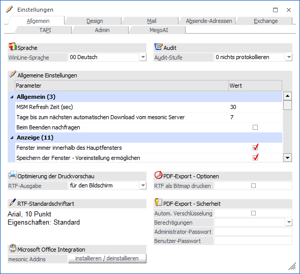

In dem Menüpunkt…
1 WinLine START
1 Parameter
1 Einstellungen…
… können Optionen, die für das tägliche Arbeiten mit der WinLine wichtig sind, definiert werden.

Das Programm ist dabei in die folgenden Register unterteilt, welche in den nachfolgenden Kapiteln detailliert beschrieben werden:
ü Register "Allgemein"
Im Register
"Allgemein" können allgemeibne persönliche Parameter definiert werden.
ü Register "Design"
In dem Register
"Design" kann definiert werden, wie das Programm dargestellt werden soll.
ü Register "Mail"
In dem Register
"Mail" können grundsätzliche Optionen für den Versand von Dokumenten aus der
WinLine heraus vorgenommen werden.
ü Register "Absende-Adressen"
In dem
Register "Abs-Adressen" können u.a. alternative Absender-Email-Adressen
hinterlegt werden.
ü Register "Exchange"
In dem Register
"Exchange" können Outlook-Verbindungen angelegt werden.
ü Register "TAPI"
In dem Register
"TAPI" könnten grundsätzliche Einstellungen für die TAPI-Kommunikation definiert
werden.
ü Register "WinLine Server"
Über das
Register "WinLine Server" können Parameterwerte für das mobile Arbeiten gesetzt
werden.
ü Register "Admin"
In dem Register
"Admin" können systemweit geltende Einstellung getroffen werden.
ü Register "MesoAI"
Im Register
"MesoAI" kann der Produktschlüssel für die Verwendung der Funktion MesoAI
hinterlegt werden. Dieses Register steht nur Benutzern des Typs "Administrator"
zur Verfügung.
Buttons
Ø Ok
Durch Anklicken des Buttons "Ok" oder durch Drücken der F5-Taste werden die Einstellungen gespeichert und das Programm ggfs. automatisch neu gestartet.
Ø Ende
Durch Drücken des Buttons "Ende" bzw. durch die ESC-Taste wird das Fenster geschlossen und alle vorgenommenen Einstellungen verworfen.